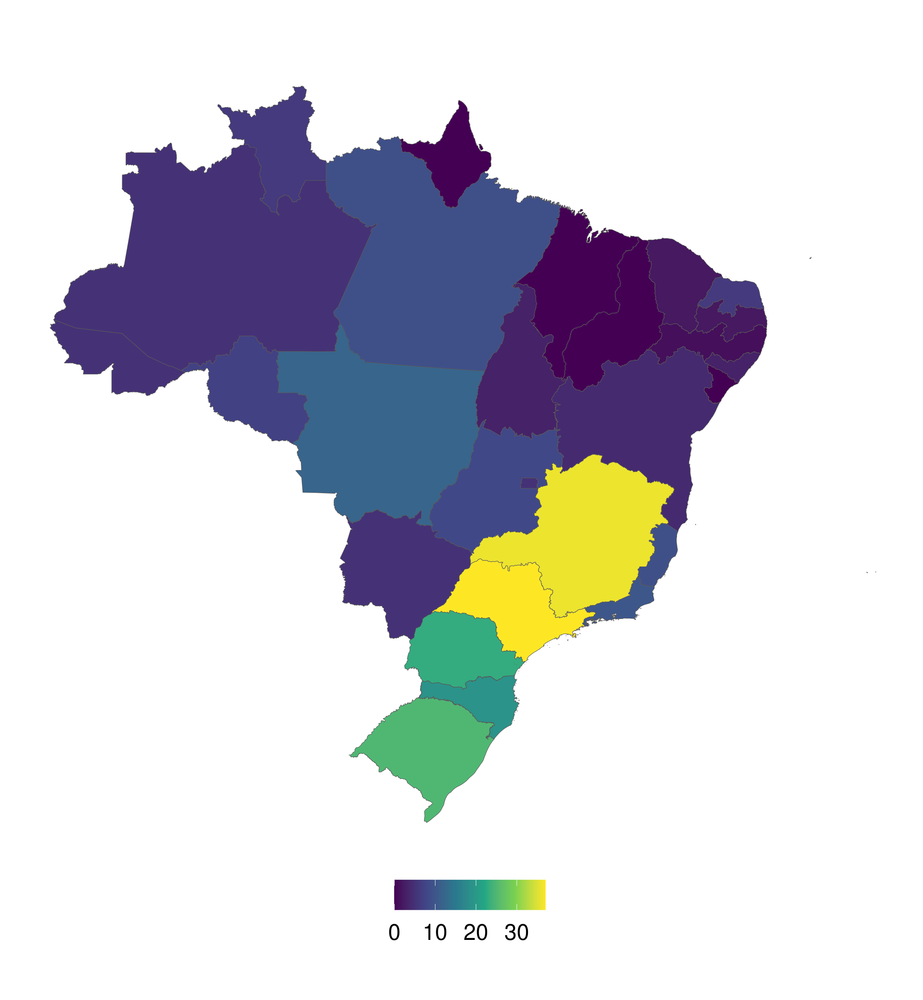

Code
library(httr)
library(glue)
library(tibble)
library(purrr)
library(readr)
library(dplyr)
library(tidyr)
library(stringr)
library(sf)
library(ggplot2)This report is part of my application to the Researcher/Data Scientist position at UCLouvain. This document is a dynamic report generated with R and Quarto. The source code for this report is hosted on GitHub and can be generated in the Code hyperlink at the top right of this page.
In this section, I will use the API Compras Governamentais to extract all meat purchases made by the Brazilian government. This dataset will be used to count the number of meatpackers in each state which are suppliers of the government. The API documentation for the governement suppliers is detailed here.
I start the script by importing the external libraries and defining the necessary parameters to import the dataset.
library(httr)
library(glue)
library(tibble)
library(purrr)
library(readr)
library(dplyr)
library(tidyr)
library(stringr)
library(sf)
library(ggplot2)api_endpoint = 'http://compras.dados.gov.br/fornecedores/v1/fornecedores.'
# available types: `html`, `xml`, `json`, or `csv`
format_type = 'csv'
# parameters to be used to call API
col_id = 'id_cnae'
# Specific classes of economic activity to extract
CNAE_ids <- c('1011201', '1011205', '1013901', '1013902')Once the API address and variables are defined, I use the httr::GET() function to query the API response and the httr:content() function to extract its content. The purrr::map() is used to vectorize the call over the CNAE_ids classes. Before extracting the contents, I check that the call status has succeeded (status code 200). For this exercise, I simply chose to remove the failed queries, but a better approach would be to retry the call for \(n\) times or until it returns the correct status.
# Query data
suppliers_ls = map(
CNAE_ids,
~ GET(glue('{api_endpoint}{format_type}?{col_id}={.x}'))
)
# Check if all queries were correct (200 code)
query_status <- map(suppliers_ls, ~ status_code(.)) |>
flatten_int()
# keep only the ones that did not fail
suppliers_ls <- suppliers_ls[query_status == 200]
# Extract query content and convert to a single data.frame
suppliers_dt = map(
suppliers_ls,
~ content(.x)
) |>
bind_rows()The resulting query extracted a total of 266 suppliers from 25 different states. Of the total number of suppliers, 24 are inactive. I will use only active suppliers to count their distribution among the states. The CNPJ is used as a primary key to identify the supplier.
# compute number of suppliers by state
nbSuppliers_state <- suppliers_dt |>
# remove innactive suppliers
filter(Ativo == 'Sim') |>
group_by(UF) |>
# count number of suppliers by state UF
summarise(
nbSuppliers = length(unique(CNPJ))
)Two figures are used to visualize the distribution of suppliers in Brazil. The barplot is used to compare the total number of suppliers among the states, and the map is useful to visualize their spatial distribution among the regions. Note that both figures require the files stored in the data folder.
# Figure barplot
nbSuppliers_state |>
# add full name of states to be used in ylab
left_join(
read.csv(file.path('data', 'states.csv'))
) |>
ggplot(aes(
# sort states by number of suppliers
y = reorder(StateName, nbSuppliers),
x = nbSuppliers,
# color states by number of suppliers
fill = nbSuppliers
)) +
geom_col() +
scale_fill_viridis_c() +
theme_classic() +
ylab('') + xlab('') +
labs(title = 'Number of active suppliers by state') +
theme(
legend.position = 'none',
plot.title = element_text(hjust = 50, margin = margin(0, 0, 55, 0)),
# large text size because of Quarto resolution
text = element_text(size = 36)
)
# Figure map
readRDS(file.path('data', 'statesPolygon.RDS')) |>
# add nb of suppliers to the attribute table
left_join(
nbSuppliers_state,
by = c('abbrev_state' = 'UF')
) |>
# For states that didn't have any suppliers, fill with zero
mutate(nbSuppliers = replace_na(nbSuppliers, 0)) |>
ggplot() +
geom_sf(aes(fill = nbSuppliers)) +
scale_fill_viridis_c() +
theme_classic() +
theme(
axis.line=element_blank(),
axis.title=element_blank(),
axis.text=element_blank(),
axis.ticks=element_blank(),
legend.title=element_blank(),
legend.position = 'bottom',
text = element_text(size = 26),
legend.key.size = unit(1, 'cm')
)
Figure 1. Distribution of active meat suppliers by Brazilian states. The continuous color gradient represents the number of suppliers ranging from 0 (dark blue) to 37 (yellow).